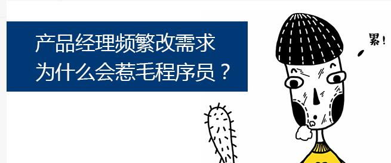
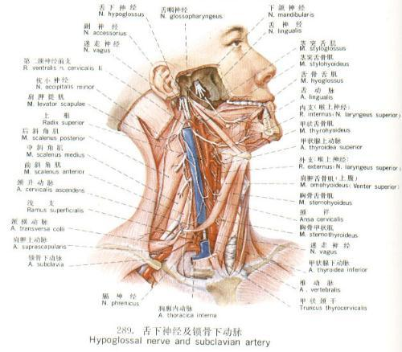

产品经理和工程师如何有效沟通
-- 靠谱产品的九字真言
Tony Deng
Tony Deng
我们去通过Google或Baidu搜索关键词 “产品经理 程序员”，也经常出现如下的内容。
比如，想不通的......
比如，比较暴力的......
或者，如此求解的......
感觉整个互联网行业，甚至IT圈都在上演产品经理和程序员的“恩怨情仇”，堪比各大影院前段时间上映的迪斯尼大片《Zootopia》（疯狂动物城）。
很多产品汪都经常会碰到这样的场景：
一个非常复杂的产品设计终于加班加点的完成了，你满心欢喜的召集程序猿们开产品讨论会，但是过程中却备受打击，经常会碰到如下问题，而你还回答不出来：
很郁闷的是上述问题，你在产品设计过程中，你根本没有考虑过这些问题。
你一直在考虑如何来创建订单，应该让用户更简单的使用。
而这些问题，你认为都是小问题，还需要我来考虑吗？
程序猿们会认为这么长的时间了，你产品经理在想什么，这些都没有想明白，没干活啊！
产品汪们会非常委屈，觉得程序猿是有意刁难自己。
要么觉得这些问题难道不是应该程序猿考虑的吗？
要么觉得，这些问题复杂想不清楚。
当产品汪把上述问题的答案整理完之后，再次召集程序猿们开产品讨论会，发现貌似还是会有类似的问题。
慢慢的，产品汪和程序猿之间的情绪就越来越对立，对这个产品的热情也慢慢下降，更多的精力和时间都放在两边对耗上了，产品推行的非常之慢。
直到Boos来过问产品的状况，只有互相推诿和指责。
在于我们在产品讨论会上碰到哪些可能答不出来的问题。
答案是显而易见的，产品经理必须要考虑这些问题。
因为这些最基本的问题会影响到系统的设计。
没有考虑到，意味着产品经理对于规划的产品
一般产品研发的上下游基本上下图，程序猿处于产品汪的下游。
一个没有概念，规划的产品设计，你让一个思维严谨的程序猿如何能接受？他们只会认为，产品经理不靠谱，这种不靠谱的需求只会导致如下情况：
如果让这个产品通过了产品讨论阶段，那么他们只能为这个不靠谱的产品设计和产品经理买单，程序猿们会产生这样的想法： 我TMD就是那个“接盘侠”。
产品汪们，你们也想想，你们愿意当这个接盘侠吗？
产品如同人一样，有样貌、皮肤等外在结构，也有筋骨、神经网络等内在体系。
在产品设计及规划中，产品汪除了要对UI、UE等外在负责以外，还需要对产品的筋骨、神经网络负责。
产品的筋骨、神经网络就是产品隐含的逻辑规则，才是产品运转正常的保证。
我们推出一个产品，一般要解决两类问题：
那我们设计一个产品，不管我们想的如何天马行空，如何炫酷，也一定要通过一整套的IT系统来支撑。而IT系统本质上就是对数据的各种处理，各种状态流转，使用了各种形态来展示这些数据和状态流转。
而产品汪一般的产品设计思路都是按照人的思维模式来进行设计的，但是人本身就是一种适配功能很强的“适配器”，人可以对模糊的信息做出自己的补充，完善自己对这个模糊的信息补充，并作出自己的反应。
但是计算机并非如此，比如，我们进出地铁，站在扶梯上，会有语音提示“上下楼梯，请握紧扶手”。我们很容易理解这个句话，并作出自己适当的反应，来握紧扶手。
但是计算机如何来理解？用手施加10牛顿的力吗？
那产品汪在做产品设计时，是否要考虑到如何来定义这个“”？！
那很多产品汪就非常郁闷的说，这么多的问题，怎么样才能够都考虑到呢？
那怎么办呢？我们是不是需要进修一下呢？比如学星爷研读的秘籍《产品狗的自我修养》。
其实，我们并不需要研读那么深刻的著作，其实我们只要掌握了产品设计的九字真言，基本上也程序猿的在产品讨论会上碰到的问题就能解决的差不多了。
很多人看到“九字真言”的第一反应可能是这样的。
其实产品设计的九字真言就是增 、删、改、查、显、算、传、正、反
所有的产品设计，本质上都是对于一些数据、内容、结构层、信息做一些交互，这是产品的本质。
一般来说，产品经理做到以上四点就能把原型做的非常完善，例如数据做成了列表样式，是否考虑了分页？是否需要排序？排序的话按什么条件进行？排序满 足不了需求的话是否需要搜索框？查询框？查看详细列表的打开方式是怎么样的？本页操作还是新窗口操作？跳转之后需不需要跳回来？选择数据支持单选还是多 选？单选的话是用下拉还是radio？如此等等
细节交代的越清楚，和程序猿的沟通成本就越小
不要只想正常流程
也要多想异常流程
每当我们在做产品设计的时候，都在心里默念着九个字，基本上设计出来的产品功能点就都覆盖到了，省去了产品讨论和产品研发过程中很多不必要的沟通、交流和冲突。
有一个比喻非常好，“产品是孩子，开发是妈妈，产品经理是爸爸，测试时医生”，We are 伐木累！，产品汪，你们觉得呢？
另外，程序猿们也不要太过难为产品汪，大家都是在一个团队工作，为了同一个目标而努力，能够互相支持，互相补位的就多多支持和补位。毕竟大家也都是在同一个马勺里喝水。